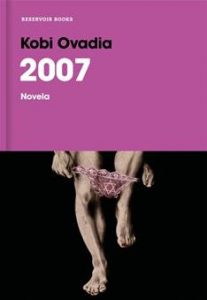

Género:
Novela contemporánea / Narrativa extranjera
Nº de páginas:
272
Editorial:
RESERVOIR BOOKS
Idioma:
CASTELLANO
ISBN:
9788417511661
Autor:
Kobi Ovadia
Sipnosis:
Miles de personas adoran a Sharón Young, pero nadie sabe cómo es realmente. Su vida se sustenta en los likes, los shares y los comentarios de sus fans en las redes sociales. Su verdadero oficio, sin embargo, lo desempeña desde el piso veintisiete de un lujoso rascacielos de Tel Aviv, resguardado en un nido de tecnología y diseño. Tras una máscara y desde la pantalla de su ordenador, es el amo de varios jóvenes que desean ser dominados, su hueste de esclavos sexuales. Pero cuando un trágico suceso desmonta sus principios vitales, emprenderá un viaje para buscar la redención y el perdón de los suyos. Y para convertirse en una persona nueva... y heterosexual. 2007 es una novela delirante y satírica, eterna y plenamente contemporánea, donde porno y mesianismo unen fuerzas para construir un mundo tan bello como horrible, tan real como el nuestro.
